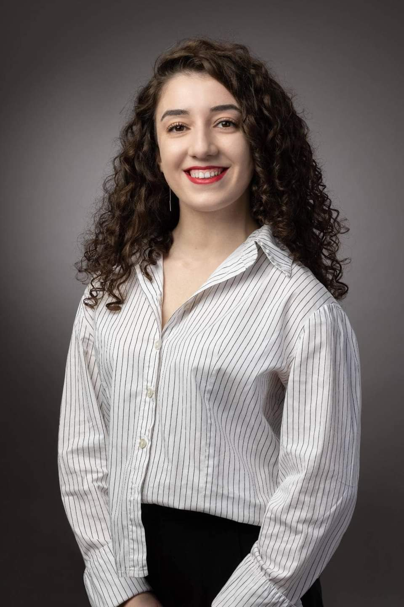

დაბადების თარიღი: 16.07.1999
დაბადების ადგილი: ცაგერის რაიონი (ლეჩხუმი)
2017 წელს დავასრულე ცაგერის საჯარო სჯოლა და ჩავირიცხე ივანე
ჯავახიშვილის სახელობის, თბილისის სახელმწიფო უნივერსიტეტში, სოციალური
და პოლიტიკური მეცნიერებების ფაკულტეტზე, ჟურნალისტიკისა და მასობრივი
კომუნიკაციის მიმართულებით.
2020 წელს გავხდი IREX-ის სერტიფიცირებული ტრენერი.
2021 წელს ვიყავი სტუდენტური ჟურნალის, "გზავნილი საქართველოდან"
რედაქტორი.
2021 წელს, უნივერსიტეტის დასრულების შემდეგ, მუშაობა დავიწყე
გამომძიებელ ჟურნალისტთა გაერთიანება "აი,ფაქტში", სადაც დღემდე ვმუშაობ.
"აი,ფაქტი" საგამოძიებო მედიაა, რომელიც 2016 წელს შეიქმნა და აშუქებს ისეთ თემებს, როგორებიცაა: კორუფცია, ნეპოტიზმი, დეზინფორმაცია, რუსული გავლენები, სანქციები და სხვა.
„აი, ფაქტის“ არსებობა და საქმიანობა შემდეგ ღირებულებებს ეფუძნება:
დამოუკიდებლობა – ჩვენ პოლიტიკური და კომერციული გავლენებისგან დამოუკიდებელი ვართ სარედაქციო გადაწყვეტილებებში. ვიძიებთ იმ ამბებს, რომელიც სხვა მედია ორგანიზაციების ყურადღების მიღმა რჩება, მიუხედავად იმისა, რომ ეს თემები მოსახლეობაზე მნიშვნელოვან გავლენას ახდენს.
პატიოსნება, მიუკერძოებლობა, სანდოობა – ჩვენი გამოძიებები ემყარება გადამოწმებულ ფაქტებს, დაბალანსებულია და არსებული პრობლემის ყველა მხარეს გთავაზობთ.
სიცხადე – ჩვენ ბევრ დროს ვხარჯავთ რთული, ჩახლართული, უსასრულო ამბების მარტივად და ყველასთვის გასაგებ ენაზე მოსათხრობად.
ცოდნისა და გამოცდილების გაზიარება – ეს გვეხმარება დავრჩეთ გულანთებულ, ენთუზიაზმით სავსე პროფესიონალებად და კარგი მაგალითი ვიყოთ ახალგაზრდა ჟურნალისტებისთვის.
რესპონდენტის საუკეთესო ინტერესი – ჩვენთვის მნიშვნელოვანია, რომ რესპონდენტებთან ვიყოთ გულწრფელი, მათ ჰქონდეთ ამომწურავი ინფორმაცია ჩვენი მიზნებისა და საქმიანობის შესახებ და ასევე საჭიროების შემთხვევაში ბოლომდე დავიცვათ ანონიმური წყაროების ვინაობა.
კარგი მმართველობის პრინციპების ხელშეწყობა – ჩვენ გვჯერა, რომ კარგი მმართველობა მნიშვნელოვანია საზოგადოების ინტერესის დასაცავად, ამიტომ, ჩვენ ვიცავთ კარგი მმართველობის პრინციპს როგორც ორგანიზაციის შიგნით, ისე ხელს ვუწყობთ კარგი კანონის უზენაესობის ხელშეწყობას სახელმწიფოს მმართველობაში.
ჩემი საკონსულტაციო ფასი: 500$ 200$
- ჩემი ჰობი/ინტერესები:
- ქართული ნაციონალური ცეკვები
- მოგზაურობა და ახალი ადგილების აღმოჩენა
- ახალი საერთაშორისო ბაზებისა და თულების შესწავლა
- front end-ის საფუძვლიანი ცოდნა :დ
- სამი მთავარი მიზანი ამ კურსზე:
- კურსის ბოლოს საიტის დამოუკიდებლად აწყობა
- ყველა შესაძლო მიმართულების სიღრმისეული სწავლა
- მუშაობის დაწყება :დ